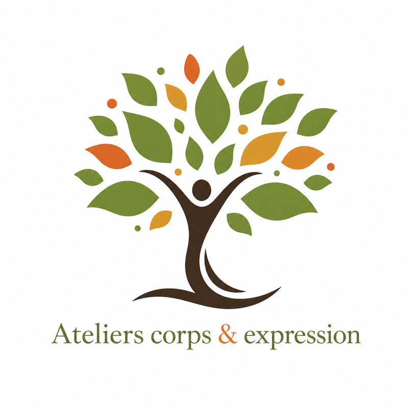

Playful extatique
Une exploration guidée du corps, du mouvement et du jeu, portée par la musique.
Lire le détailMouvement • jeu • expression
Des expériences pour remettre le corps en mouvement, jouer, s’exprimer et créer du lien.
Chaque proposition s’adapte aux personnes présentes. Il ne s’agit pas de réussir une performance, mais d’expérimenter à son rythme.

Cinq propositions
Chaque proposition possède sa couleur et peut être adaptée au groupe, au lieu et à l’énergie du moment.
Une exploration guidée du corps, du mouvement et du jeu, portée par la musique.
Lire le détailDes petits jeux progressifs pour retrouver la spontanéité sans préparer de représentation.
Lire le détailUn atelier adaptable pour remettre le corps en mouvement et retrouver une présence à soi.
Lire le détailLe plaisir de courir, observer, réagir, improviser et coopérer sans suivre un cours.
Lire le détailDeux personnes explorent leur propre danse, celle de l’autre et le mouvement qui naît entre elles.
Lire le détailEn détail
Musique • mouvement • jeu
Le Playful extatique est une exploration guidée du corps, du mouvement et du jeu, portée par la musique.
Des consignes invitent à bouger, à jouer, à interagir avec les autres ou à revenir vers soi. Chacun reste libre de s’approprier les propositions et de trouver sa propre manière de les vivre.
L’expérience permet de lâcher le cerveau et de laisser davantage de place au corps, aux sensations et aux émotions. On peut se décontracter, rire, retrouver son âme d’enfant, se défouler ou être touché plus profondément. Il est aussi possible que des émotions remontent et que des larmes apparaissent : tout ce qui se présente peut trouver sa place.
Ce n’est ni un cours de danse ni une chorégraphie. C’est un espace pour se lâcher sur la musique, jouer avec soi-même et rencontrer les autres autrement.
Jeu • confiance • spontanéité
Le théâtre d’improvisation est proposé sous forme de petits jeux et d’exercices progressifs. Il ne s’agit ni de matchs d’impro ni de préparer une représentation.
La séance commence par des propositions simples et peu engageantes. Les exercices évoluent ensuite crescendo, afin que chacun puisse gagner en confiance sans être placé directement dans une situation stressante.
Chaque personne participe selon son envie et son état du moment. Elle peut observer, entrer dans un jeu puis en sortir lorsqu’elle ne le sent plus.
L’objectif est de jouer, de lâcher prise et de desserrer progressivement le contrôle du mental. L’improvisation devient un moyen de retrouver de la spontanéité, d’écouter les autres et d’accueillir ce qui apparaît dans l’instant.
Les propositions peuvent être adaptées à tous les âges, de 4 à 96 ans.
Présence • mobilité • élan collectif
Le Réveil du corps est un atelier destiné à remettre le corps en mouvement et à retrouver une présence à soi.
Il peut mêler respiration, automassage, étirements, mobilisation articulaire, danse, yoga, sons tibétains et différentes inspirations corporelles.
L’ambiance s’adapte au groupe et au moment. Certaines séances peuvent être douces et apaisantes, tandis que d’autres deviennent plus dynamiques ou énergisantes.
Il ne s’agit pas d’appliquer une série de directives rigides. Les propositions servent de points de départ et chacun reste à l’écoute de son corps, de ses besoins et de son énergie.
L’envie est également de créer un élan collectif : se retrouver régulièrement pour réveiller les corps ensemble, s’encourager et faire de cette pratique un rendez-vous partagé.
Plaisir • réaction • coopération
Les Jeux de mouvement réunissent le jeu, le théâtre d’improvisation, le réveil du corps et la danse. Leur contenu change selon l’âge du groupe, le lieu, l’énergie du moment et les envies des participants.
Cela peut être de la balle aux prisonniers, du ninja, des jeux associant le son et le mouvement, un cache-cache géant ou d’autres propositions adaptées et inventées sur place.
Ici, le mouvement passe d’abord par le plaisir de jouer. Les activités permettent de courir, observer, réagir, improviser, coopérer et rencontrer les autres sans avoir l’impression de suivre un cours.
Les Jeux de mouvement peuvent être proposés aux enfants, aux adolescents et aux adultes. Les règles, le rythme et l’intensité sont ajustés aux personnes présentes.
Danse consciente à deux
Deux personnes, trois danses : la danse de soi, la danse de l’autre et celle du lien.
La rencontre commence par un temps de retour à soi et d’écoute du corps. Chaque personne explore les pressions, les relâchements et les micro-mouvements entre ses propres mains.
Puis, deux personnes mettent leurs paumes en contact. Elles commencent à bouger ensemble, sans leader permanent. Parfois l’une initie un mouvement, parfois l’autre, et parfois le mouvement semble naître entre elles. Chacune conserve sa propre danse tout en restant attentive à celle de l’autre.
Progressivement, le mouvement peut engager les bras, puis le corps entier. La relation permet d’explorer la confiance, l’équilibre, la résistance et, lorsque les partenaires sont prêts, un partage conscient du poids.
Les prochaines dates et les prochains lieux seront annoncés bientôt.
Je suis également ouvert aux propositions pour faire découvrir « À portée de main » dans différents espaces : lieux culturels, associations, festivals, structures sociales, espaces consacrés au mouvement et au bien-être, événements collectifs ou autres lieux souhaitant favoriser la rencontre et le lien.
La pratique peut être proposée sous la forme d’un atelier de découverte, d’une séance régulière ou d’une intervention adaptée au lieu et au public.